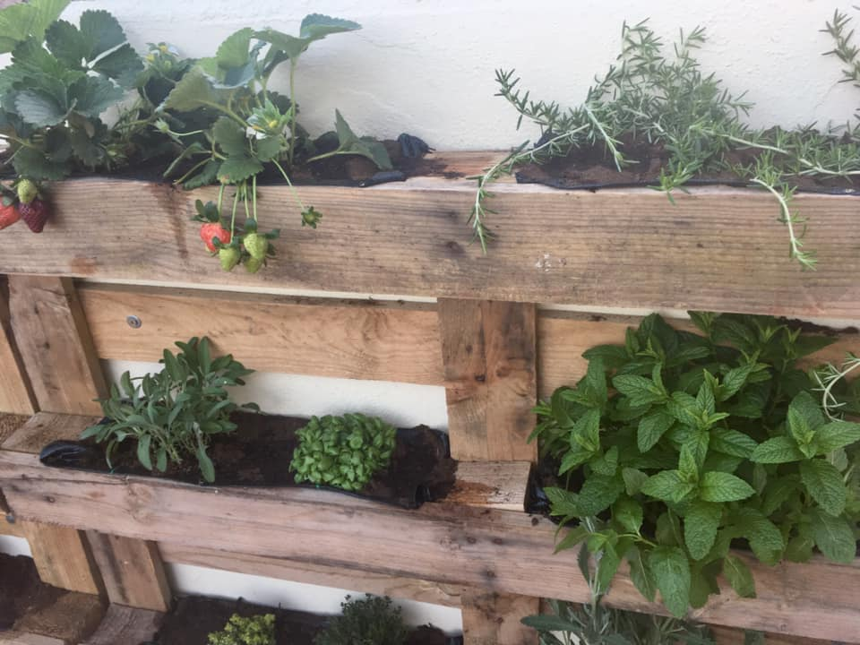
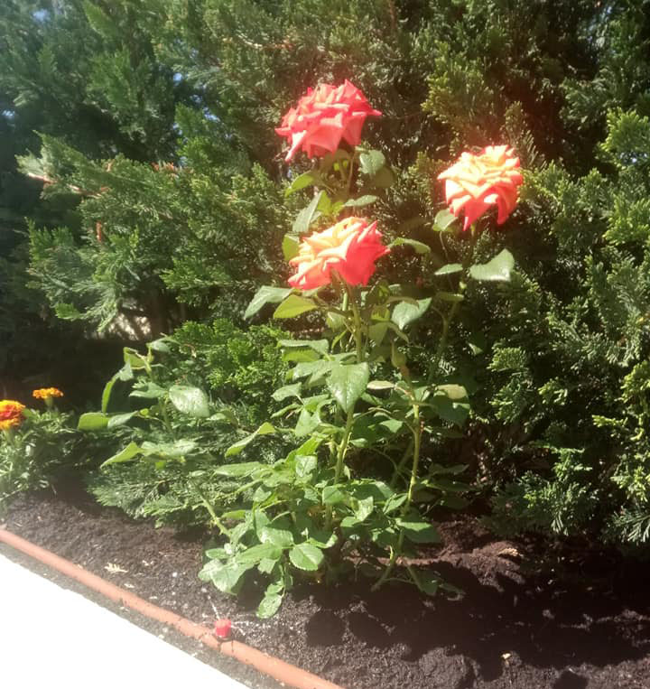
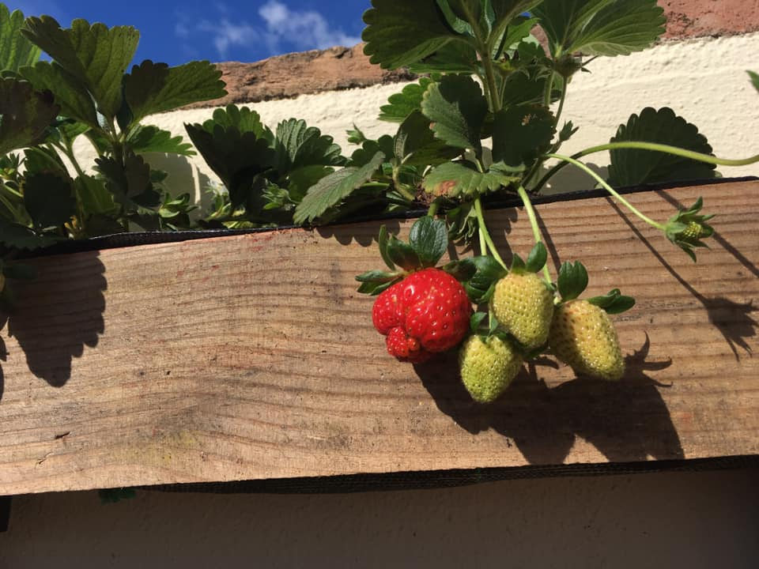
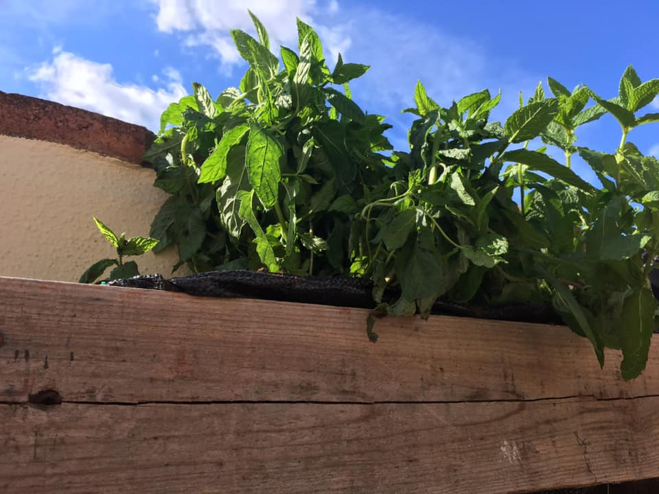
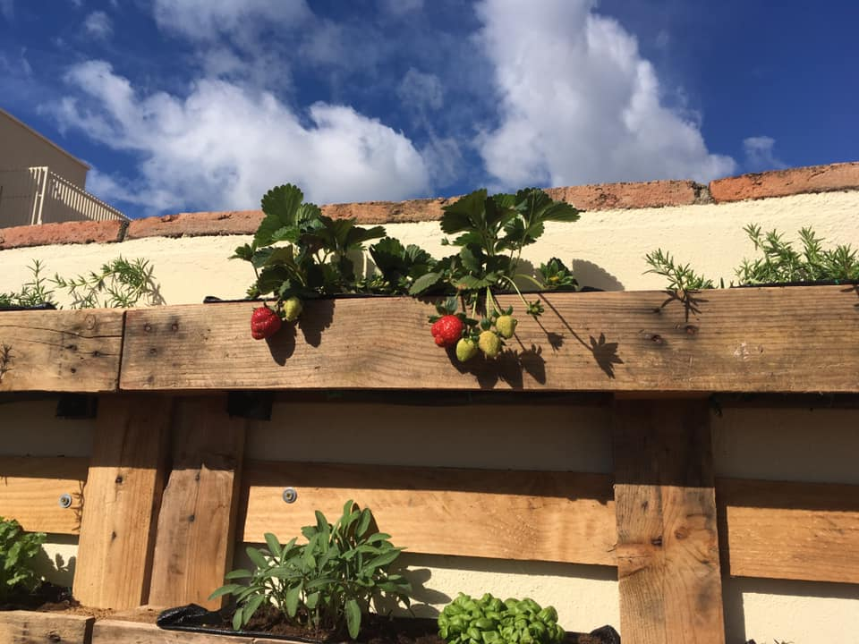
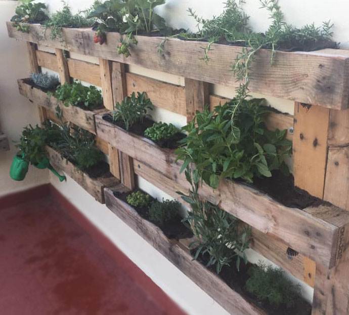
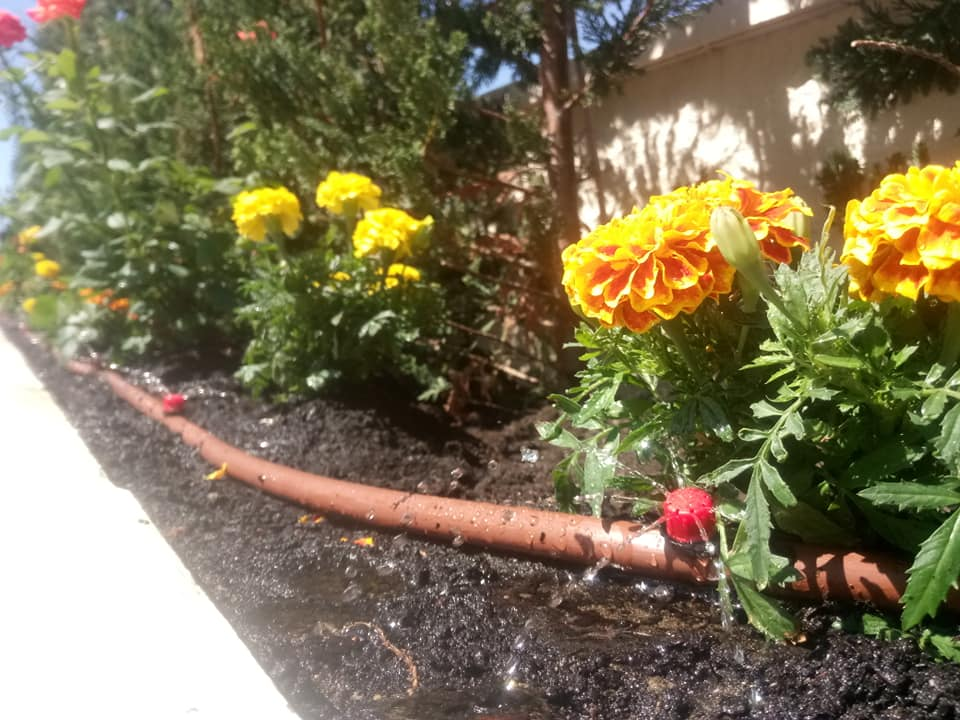
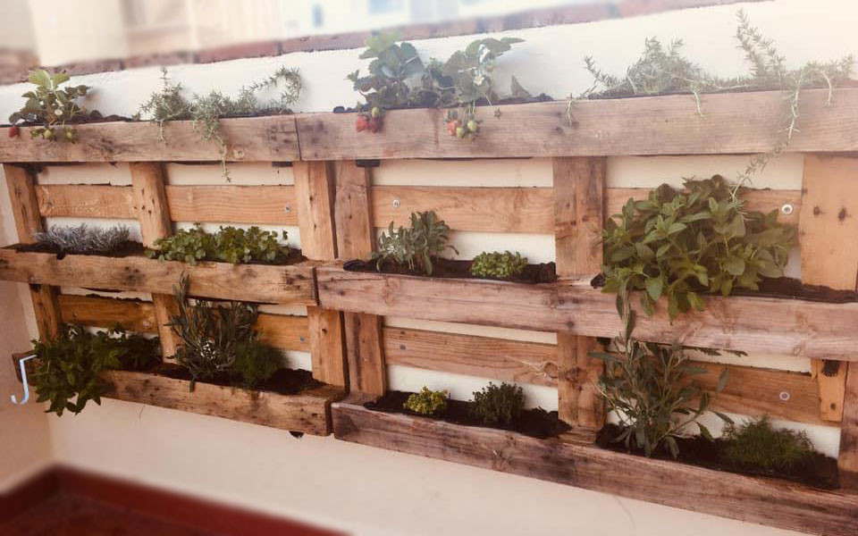

¿Que se ofrece?
En jardinería Teruel se ofrecen servicios de jardinería profesional para crear y mantener
espacios verdes hermosos y saludables. Ya sea que necesites diseño y construcción de jardines,
mantenimiento regular de jardines o asesoramiento en la selección de plantas, estoy aquí para ayudarte.
Experiencia y especialización: Con más de 5 de experiencia en el campo de la jardinería, soy experto en
el cuidado de plantas.
Mi especialización incluye
- Mantenimiento de jardines
- Recortes en altura
- Instalaciones de riego por goteo
- Adaptar soluciones a necesidades
Compromiso
Se brinda un servicio de calidad excepcional utlizando prácticas de jardinería sostenibles y respetuosas
con el medio ambiente, siempre asegurando que los clientes estén satisfechos con cada proyecto que se
completa
Explora nuestra galería de imágenes para ver algunos de nuestros proyectos anteriores
Galería de imágenes








Nuestros clientes están encantados con nuestros servicios de jardinería. Aquí hay algunos comentarios de
nuestros clientes satisfechos.
Se busca siempre dar un servicio excepcional, adaptado a cada
cliente y se agradecen sus comentarios
Feedback
Laura
"Profesional y muy agradable.
Te da mucha confianza porque tiene buenas ideas y
busca soluciones para cualquier cosa que
le pidas."
Cynthia
"Jose es el mejor jardinero que puedes contratar!
Súper profesional."
Contacto y presupuesto
¿Listo para transformar tu jardín en un oasis verde?
¡Contáctanos hoy mismo para programar una consulta gratuita!
Se ofrecen presupuestos detallados y competitivos para asegurarnos de que obtengas el mejor valor por tu
dinero